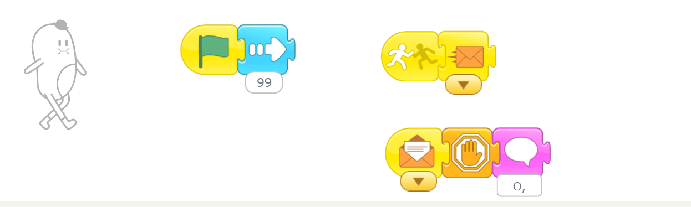

Средняя группа
Программное обеспечение: Scratch Jr
Задача: запрограммировать диалог из двух реплик.
Цель: повторить работу с событиями (сообщениями).
Задачи:
- Вспомни блоки для: столкновения, передачи события (сообщения)
- Добавь двух персонажей на сцену и сделай так, чтобы они заговорили, когда столкнулись
Подсказки:
-
Нажми сюда, если застрял и забыл, как создать событие (сообщение)

Прошлое д/з (было актуально с 23.11.2025 по 30.11.2025)
Программное обеспечение: Kodu Game Lab (нужно установить)
Задача: сделать игру.
Цель игры: отстреливаться от противников, которые идут на нас. Камера - от первого лица. Противники появляются в случайное время между 3-мя и 10-ью секундами.
Подсказки:
- В качестве игрока можно использовать объект "Задвижка"
- Для камеры от 1-го лица надо использовать в меню "Видеть" — "1 игрок"